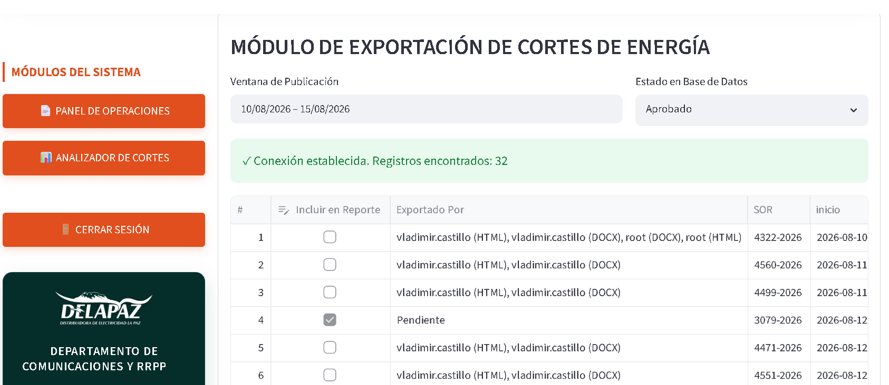
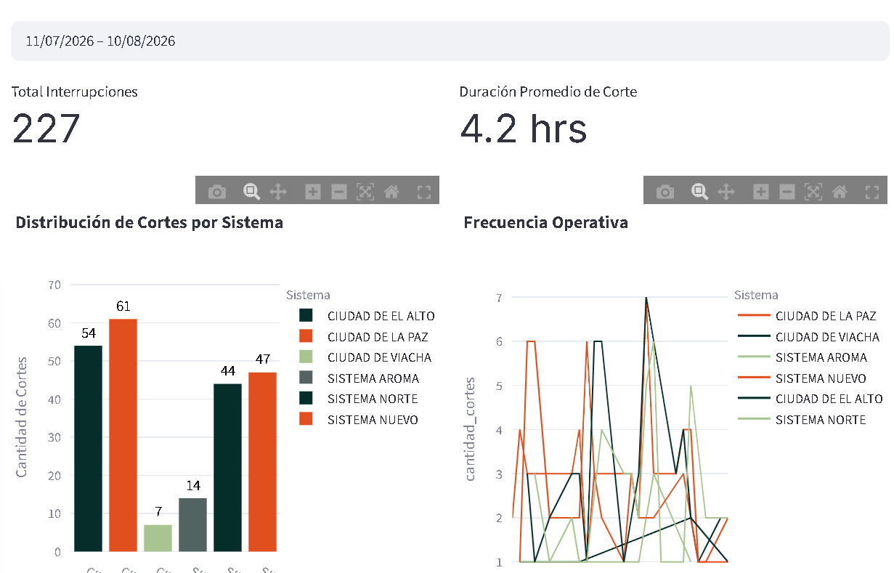
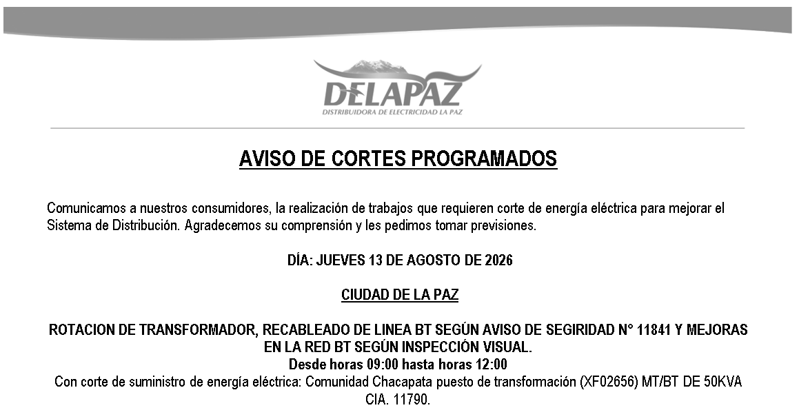

Plataforma de Consulta, Consolidación y Reportes
de Cortes de Energía
Sistema de Gestión y Automatización Corporativa

Antecedentes y Problemática
1. AntecedentesInformación Dispersa
3+
Uso de planillas independientes sin centralización ni registro unificado.
Discrepancias de Formato
Sintaxis
Errores de digitación manual en nombres de zonas, sistemas y sectores.
Demora en Reportes
Manual
Transcripción prolongada de datos para generar notas de prensa e informes.
Módulo 1: Panel de Operaciones y Filtros
2. Módulos del SistemaConsulta y Selección en Tiempo Real
Conexión directa con la base de datos PostgreSQL para filtrar interrupciones por fecha y estado.
- Normalización Automática: Clasifica automáticamente los sistemas (La Paz, El Alto, Viacha, etc.).
- Selección Interactiva: Casillas para determinar qué cortes se incluyen en la exportación.
- Trazabilidad de Exportación: Muestra qué usuario y en qué formato se generó previamente.
Panel de Operaciones

Módulo 2: Analizador y Métricas de Cortes
2. Módulos del Sistema
Analizador de Cortes - Plotly Charts

Business Intelligence Operativo
Transformación de datos crudos en métricas de gestión interactiva para la toma de decisiones.
- KPIs Automáticos: Cálculo de total de interrupciones y duración promedio en horas.
- Distribución por Sistema: Gráficos de barras que identifican zonas de mayor frecuencia.
- Tendencias Temporales: Análisis comparativo de frecuencia de mantenimiento.
Módulo 3: Motor de Reportes Word y HTML
2. Módulos del SistemaEstandarización Documental Automática
Generación de insumos institucionales listos para publicación externa o impresión física.
- Avisos de Prensa (Word): Agrupación por días y sistemas con encabezados oficiales.
- Boletas de Operación (HTML): Plantilla técnica con detalle de maniobras y potencias.
- Registro de Exportación: Guardado automático en BD de la persona que emitió la nota.
Documentos Generados

Demostración del Sistema en Vivo
Demostración
http://172.30.13.63:8501
Beneficios para la Empresa
3. Beneficios-90%
Tiempo Operativo
Generación de reportes inmediatos en 1 solo clic vs procesos manuales.
0%
Errores de Tipografía
Mapeo y homologación estricta de nombres de zonas y sistemas.
100%
Estándar Institucional
Formato corporativo garantizado en todas las notas emitidas.
Seguro
Control y Trazabilidad
Bitácora de usuarios, persistencia con cookies y seguridad de roles.
¡Muchas Gracias!
Plataforma de Consulta, Consolidación y Reportes de Cortes de Energía